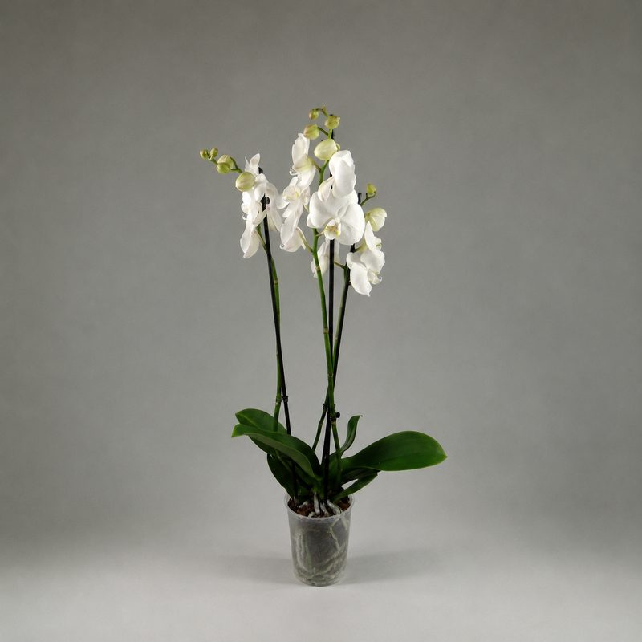
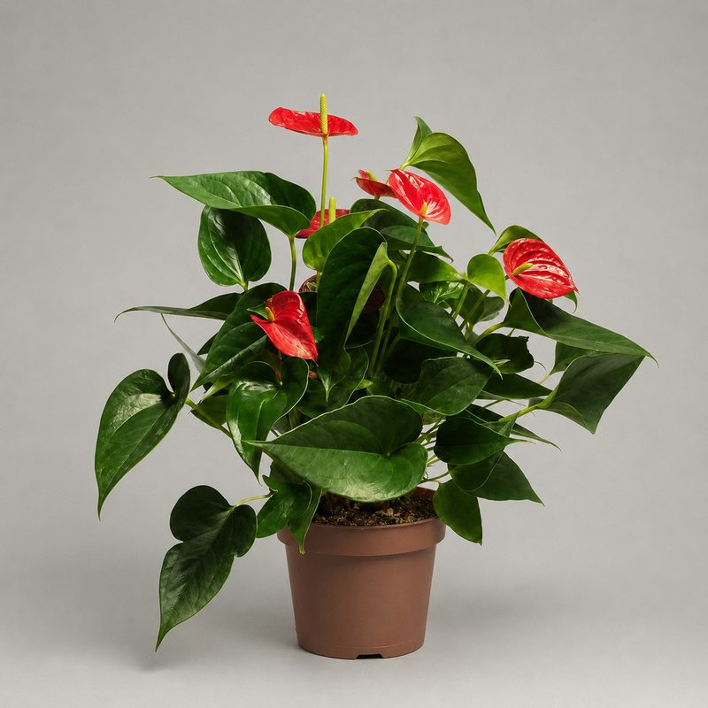
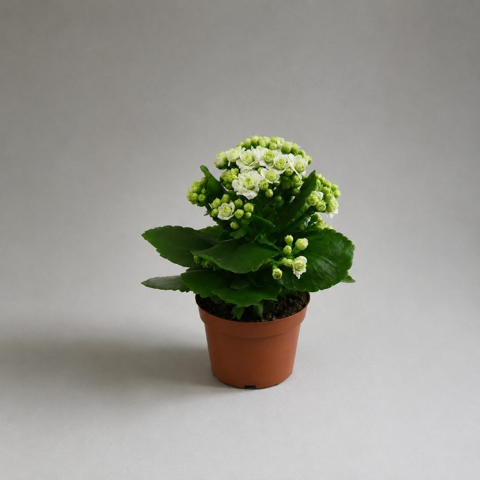
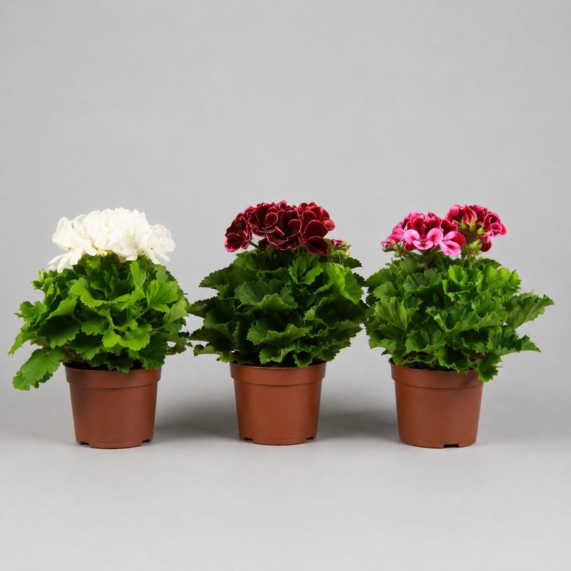
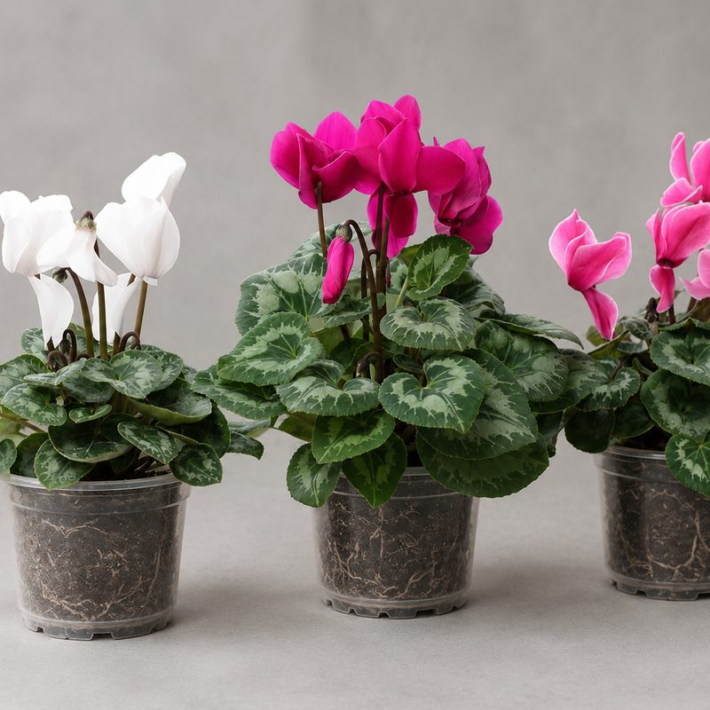
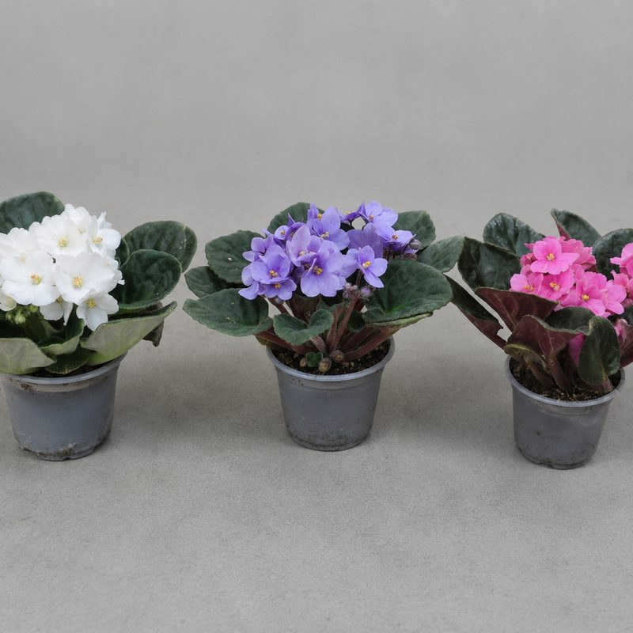

Орхидея фаленопсис
Долгое цветение, элегантный подарок. Подберём цвет под интерьер.
от 1100 сомцена-ориентир
Заказать
Подробнее об уходе →
Подарки · Бишкек
Живой подарок вместо букета: цветущие орхидеи, антуриумы и фиалки, стильные крупномеры для дома и офиса. Подберём под повод и бюджет, упакуем в красивое кашпо, привезём по Бишкеку — можно с открыткой от вашего имени.
По поводу
Девушке или маме — цветущую орхидею фаленопсис или нежную фиалку. Мужчине — антуриум («мужское счастье») или строгий замиокулькас. Коллеге на день рождения — неприхотливый каланхоэ или спатифиллум. На новоселье — эффектную монстеру или фикус лировидный, которые станут центром интерьера. Офису от партнёров — крупное растение в напольном кашпо: смотрите озеленение офисов.
Каталог

Долгое цветение, элегантный подарок. Подберём цвет под интерьер.

«Мужское счастье» — глянцевые красные покрывала круглый год.

Яркие соцветия, неприхотлив, цветёт обильно и долго.

Классика подоконника, цветёт всё лето, ароматные сорта.

Зимнее цветение нежными «бабочками», любит прохладу.

Компактная, цветёт почти круглый год, десятки расцветок.
Не проблема: в наличии больше, чем на сайте — каталог ещё пополняется. Напишите в WhatsApp — найдём и привезём под заказ, с кашпо и открыткой.
Частые вопросы
Букет живёт неделю, растение — годы и каждый день напоминает о дарителе. По цене сопоставимо: цветущая орхидея или антуриум стоят как средний букет, а радуют месяцами.
Обычно да: напишите в WhatsApp до обеда — привезём в тот же день по Бишкеку. Уточним наличие, пришлём фото конкретного растения перед доставкой.
Конечно. Скажите повод, бюджет и пару слов о человеке — предложим 2–3 варианта с фото. Добавим красивое кашпо и открытку с вашим текстом.
Подарим памятку по уходу и подберём неприхотливый вариант: замиокулькас, сансевиерию или каланхоэ сложно погубить даже новичку.
Напишите повод и бюджет — пришлём варианты с фото. Доставим по Бишкеку в тот же день.